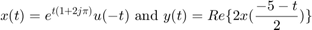
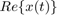
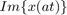
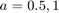
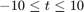
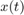
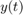
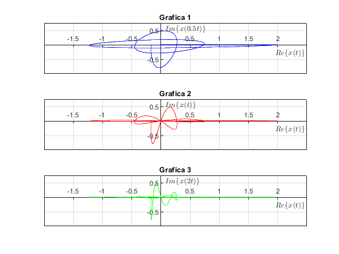
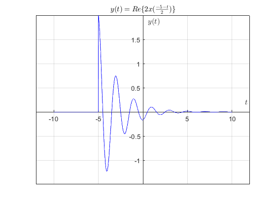
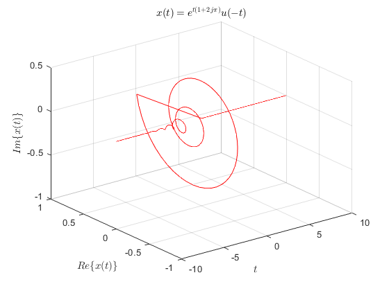

Sección 5
1.11-3 Define

(a) Use MATLAB to plot  versus  for , and and . How important is the scale factor a on the shape of the resulting figure?
Primero definimos las funciones  y 
x= @(t) exp((1+j*2*pi).*t).*heaviside(-t); Re= @(t) real(2.*x((-5-t)/2)); t= linspace(-10,10,1000);
(a) Graficando las componentes real e imaginaria de para los valores de a establecidos
Im= @(t) imag(x(t)); %Para a= 0.5 subplot(3,1,1) plot(Re(t),Im(0.5.*t),'b') grid on plano = gca; plano.XAxisLocation = "origin"; plano.YAxisLocation = "origin"; axis([-2 2.5 -1 0.75]) xlabel('$Re\{x(t)\}$','interpreter','latex') ylabel('$Im\{x(0.5t)\}$','interpreter','latex') title('Grafica 1') % Para a= 1 subplot(3,1,2) plot(Re(t),Im(t),'r') grid on plano = gca; plano.XAxisLocation = "origin"; plano.YAxisLocation = "origin"; axis([-2 2.5 -1 0.75]) xlabel('$Re\{x(t)\}$','interpreter','latex') ylabel('$Im\{x(t)\}$','interpreter','latex') title('Grafica 2') % Para a= 2 subplot(3,1,3) plot(Re(t),Im(2.*t),'g') grid on plano = gca; plano.XAxisLocation = "origin"; plano.YAxisLocation = "origin"; axis([-2 2.5 -1 0.75]) xlabel('$Re\{x(t)\}$','interpreter','latex') ylabel('$Im\{x(2t)\}$','interpreter','latex') title('Grafica 3')
(b) Graficando en el intervalo
figure plot(t,Re(t),'b') grid on plano = gca; plano.XAxisLocation = "origin"; plano.YAxisLocation = "origin"; axis([-12 12 -1.5 2]) xlabel('${t}$','interpreter','latex') ylabel('$y(t)$','interpreter','latex') title('$y(t)=Re\{2x(\frac{-5-t}{2})\}$','interpreter','latex')
(c) Calculando la energía de la señal
syms t
Ex=int((exp((1+j*2*pi).*t))^2,t,-inf,0)
Ex = -1i/(2*(2*pi - 1i))
(d) Calculando la energía de la señal
syms t
Ey=int((real(2.*x((-5-t)/2))).^2,t,-10,inf)
Ey = 2/(4*pi^2 + 1) + 2
(e) La gráfica de para es
t=linspace(-10,10,1000); plot3(t,real(x(t)),Im(t),'r') grid on plano = gca; plano.XAxisLocation = "origin"; plano.YAxisLocation = "origin"; xlabel('${t}$','interpreter','latex') ylabel('$Re\{x(t)\}$','interpreter','latex') zlabel('$Im\{x(t)\}$','interpreter','latex') title('$x(t)=e^{t(1+2j{\pi})}u(-t)$','interpreter','latex')